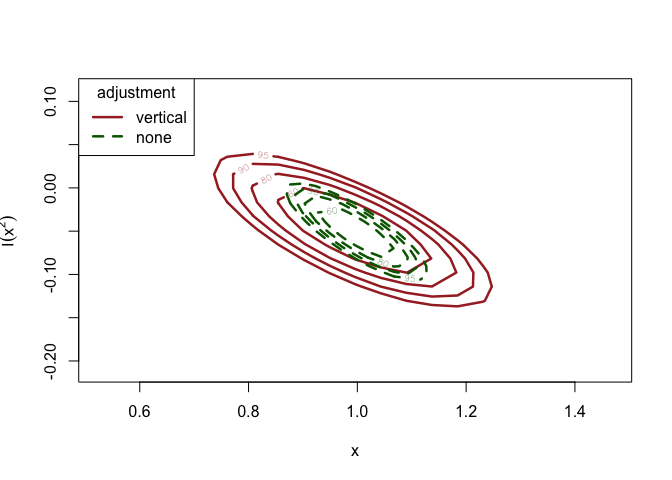

chantrics adjusts the loglikelihood of common econometric models for clustered data based on the estimation process suggested in Chandler and Bate (2007), using the chandwich package, and provides convenience functions for inference on the adjusted models. adj_loglik() adjusts the parameter covariance matrix of the models to incorporate clustered data, and can mitigate model misspecification by wrapping chandwich::adjust_loglik for the supported models.
The returned model of class chantrics can be plugged into standard model evaluation and model comparison methods, for example summary(), confint() and anova(), and a hypothesis test framework provided by alrtest().
Installation
You can install the released version of chantrics from CRAN with:
install.packages("chantrics")The development version is available from GitHub with:
## Remove the # if "devtools" is not installed yet.
# install.packages("devtools")
devtools::install_github("tbruckbauer/chantrics")Usage
This example is using the misspecified count data regression from Chapter 5.1 in the Object-Oriented Computation of Sandwich Estimators vignette from the sandwich package (Zeileis 2006). First, data from a negative binomial model is generated, and then a Poisson model is fit, which is clearly misspecified.
library(chantrics)
set.seed(123)
x <- rnorm(250)
y <- rnbinom(250, mu = exp(1 + x), size = 1)
## Fit the Poisson glm model, which is not correctly specified
fm_pois <- glm(y ~ x + I(x ^ 2), family = poisson)
lmtest::coeftest(fm_pois)
#>
#> z test of coefficients:
#>
#> Estimate Std. Error z value Pr(>|z|)
#> (Intercept) 1.063268 0.041357 25.7094 < 2e-16 ***
#> x 0.996072 0.053534 18.6062 < 2e-16 ***
#> I(x^2) -0.049124 0.023146 -2.1223 0.03381 *
#> ---
#> Signif. codes: 0 '***' 0.001 '**' 0.01 '*' 0.05 '.' 0.1 ' ' 1
# The I(x^2) term is spuriously significant.In order to mitigate the misspecification, the loglikelihood adjustment is applied to the model object using adj_loglik(model_object). If clustered data is available, a vector or factor indicating from which cluster the observation originates can be passed into the function using cluster. If it is not supplied, it is assumed that each observation originates from its own cluster and is independent. More information on this can be found in the clustering vignette.
## Apply the loglikelihood adjustment to the model
fm_pois_adj <- adj_loglik(fm_pois)
summary(fm_pois_adj)
#> MLE SE adj. SE
#> (Intercept) 1.06300 0.04136 0.08378
#> x 0.99610 0.05353 0.10520
#> I(x^2) -0.04912 0.02315 0.03628
lmtest::coeftest(fm_pois_adj)
#>
#> z test of coefficients:
#>
#> Estimate Std. Error z value Pr(>|z|)
#> (Intercept) 1.063268 0.083776 12.6918 <2e-16 ***
#> x 0.996072 0.105217 9.4668 <2e-16 ***
#> I(x^2) -0.049124 0.036284 -1.3539 0.1758
#> ---
#> Signif. codes: 0 '***' 0.001 '**' 0.01 '*' 0.05 '.' 0.1 ' ' 1
# The I(x^2) term is no longer significant.
# Produce confidence intervals for the parameter estimates
chandwich::conf_intervals(fm_pois_adj)
#> Waiting for profiling to be done...
#> Model: poisson_glm_lm
#>
#> 95% confidence intervals, adjusted loglikelihod with type = ''vertical''
#>
#> Symmetric:
#> lower upper
#> (Intercept) 0.89907 1.22747
#> x 0.78985 1.20229
#> I(x^2) -0.12024 0.02199
#>
#> Profile likelihood-based:
#> lower upper
#> (Intercept) 0.8954 1.2232
#> x 0.7877 1.1991
#> I(x^2) -0.1198 0.0222
# Generate a nested model from fm_pois_adj
fm_pois_small_adj <- update(fm_pois_adj, . ~ . - I(x^2))
lmtest::coeftest(fm_pois_small_adj)
#>
#> z test of coefficients:
#>
#> Estimate Std. Error z value Pr(>|z|)
#> (Intercept) 1.05525 0.08111 13.010 < 2.2e-16 ***
#> x 0.90172 0.06939 12.995 < 2.2e-16 ***
#> ---
#> Signif. codes: 0 '***' 0.001 '**' 0.01 '*' 0.05 '.' 0.1 ' ' 1
# Perform an adjusted likelihood ratio test on the two models
anova(fm_pois_adj, fm_pois_small_adj)
#> Analysis of Adjusted Deviance Table
#>
#> Model 1: y ~ x + I(x^2)
#> Model 2: y ~ x
#>
#> Resid.df df ALRTS Pr(>ALRTS)
#> 1 247
#> 2 248 1 1.8202 0.1773
# Similarly, specify to remove I(x^2) from the larger model
alrtest(fm_pois_adj, "I(x^2)")
#> Adjusted likelihood ratio test
#>
#> Model 1: y ~ x + I(x^2)
#> Model 2: y ~ x
#>
#> Resid.df df ALRTS Pr(>ALRTS)
#> 1 247
#> 2 248 1 1.8202 0.1773
# Plot confidence regions for the parameter estimates
fm_pois_adj_vert <-
chandwich::conf_region(fm_pois_adj, which_pars = c("x", "I(x^2)"))
#> Waiting for profiling to be done...
fm_pois_adj_none <-
chandwich::conf_region(fm_pois_adj,
which_pars = c("x", "I(x^2)"),
type = "none"
)
#> Waiting for profiling to be done...
plot(
fm_pois_adj_vert,
fm_pois_adj_none,
conf = c(60, 80, 90, 95),
col = c("brown", "darkgreen"),
lty = c(1, 2),
lwd = 2.5
)
More information on the different methods can be found in the Introducing chantrics vignette, and in the corresponding help pages.
References
Chandler, Richard E., and Steven Bate. 2007. “Inference for Clustered Data Using the Independence Loglikelihood.” Biometrika 94 (1): 167–83. https://doi.org/doi:10.1093/biomet/asm015.
Zeileis, Achim. 2006. “Object-Oriented Computation of Sandwich Estimators.” Journal of Statistical Software, Articles 16 (9): 1–16. https://doi.org/10.18637/jss.v016.i09.